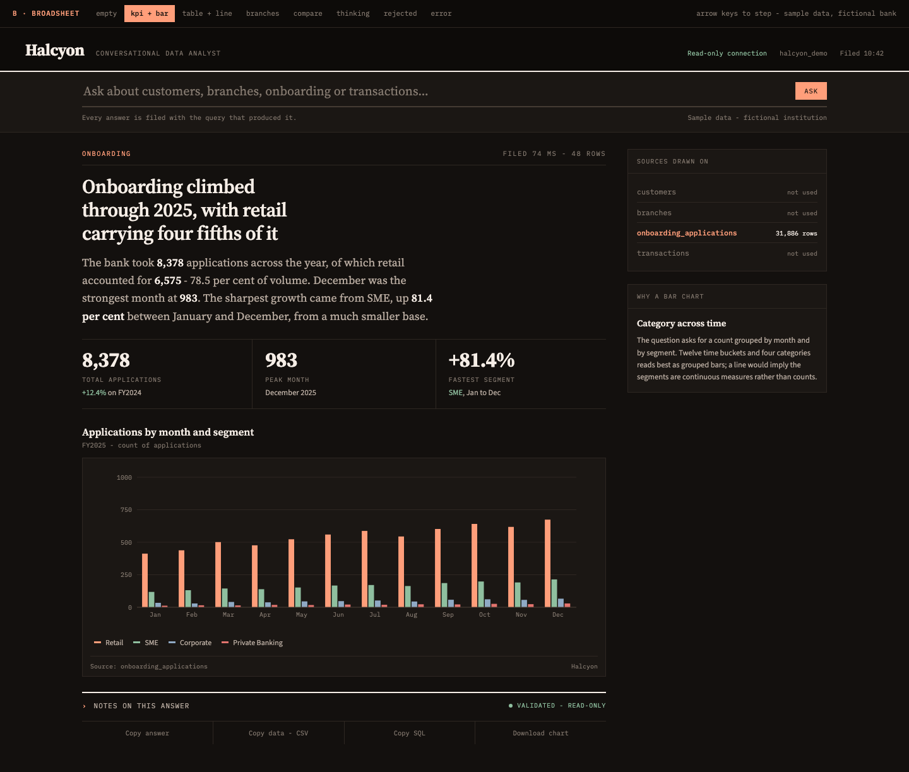

Conversational data analyst for a fictional bank. Direction B · Broadsheet, approved and built out: all four example questions from the brief, eight states, dark theme.
Open the prototype →Click through. In the prototype itself, arrow keys step between states.

Three deliverables, alongside the prototype.
The core idea, why this dark, layout rationale, type system, the audit-trail decision, and the eight rules that must not be broken.
The six-stage pipeline, the five-check SQL guard, the read-only role, API contract, the test that matters, and how it would be productionised.
Every colour, font, size and spacing token as a drop-in @theme
block, plus the Recharts bridge. 46 tokens, no arbitrary values needed.
All answered, each with a different output form.
| Question | State | Form | Tables |
|---|---|---|---|
| Show monthly onboarding applications by customer segment. | kpi-bar | KPI row + grouped bars | 1 |
| Which branches have the highest rejection rate? | branches | Ranked horizontal bars + table | 2 |
| Compare retail and SME onboarding volumes. | compare | Head-to-head + paired bars | 1 |
| Show the top five customers by transaction value. | table-line | Data table + line chart | 3 |
The Tailwind theme could not be compiled here: this machine's
npm registry blocks a transitive dependency (E403 MediaTypeBlocked). The CSS was
verified structurally instead — balanced, 46 tokens, no unresolved references, all 12 colours
matching the live design exactly. Run
npx @tailwindcss/cli -i docs/tailwind-theme.css -o /tmp/out.css on an open network to
close it out.